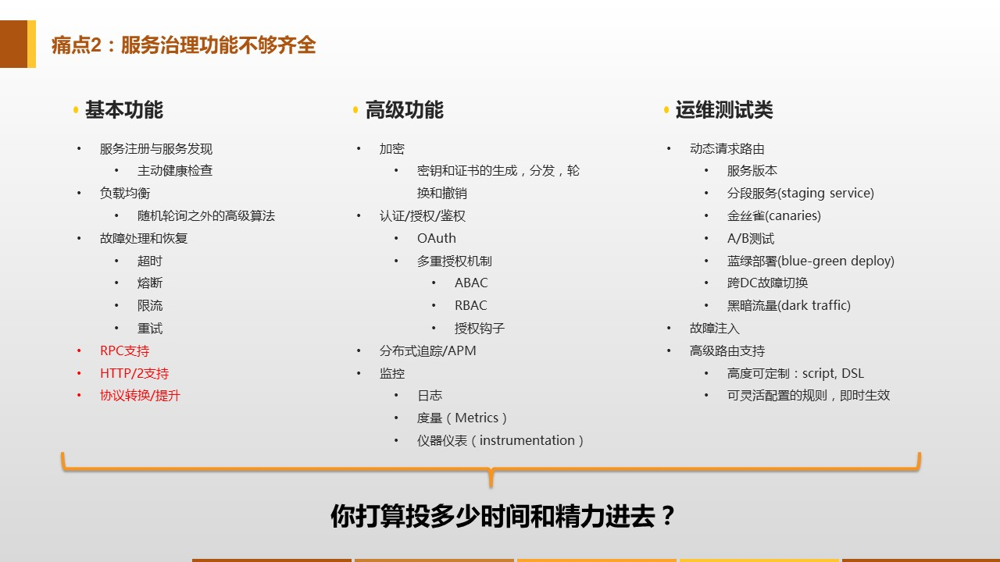
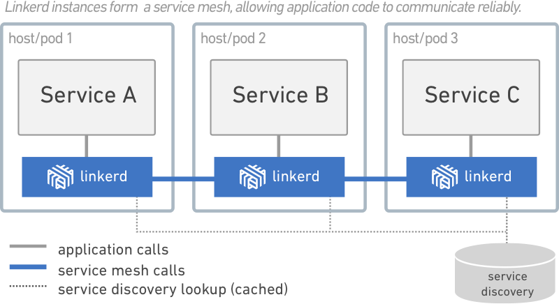
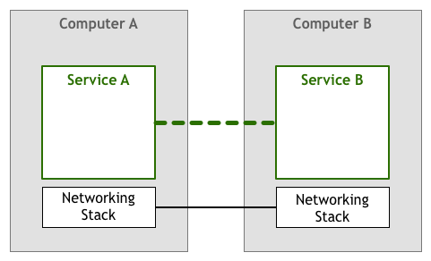
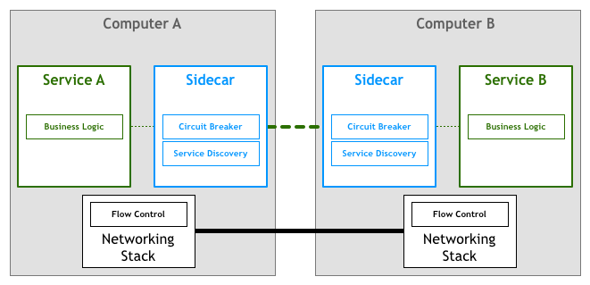
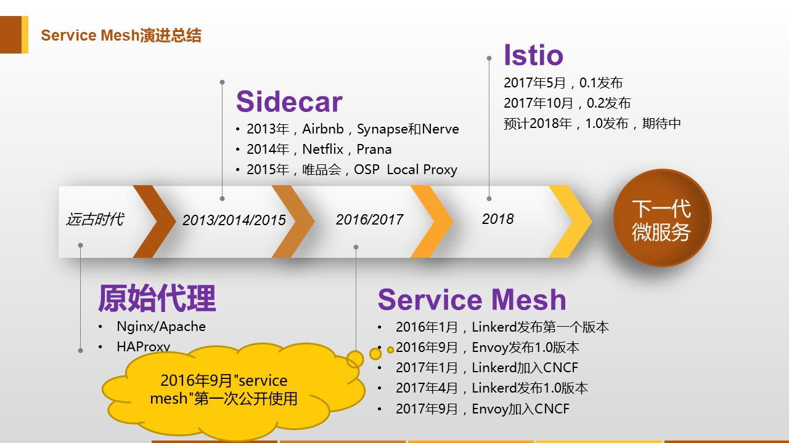

<!DOCTYPE HTML>
<html>
<head><meta name="generator" content="Hexo 3.9.0">
  <meta charset="utf-8">
  <meta http-equiv="X-UA-Compatible" content="IE=edge">
  <meta name="apple-mobile-web-app-capable" content="yes">
  <meta name="apple-mobile-web-app-status-bar-style" content="black">
  <meta name="google-site-verification" content>
  
  <title>服务网格：微服务进入2.0时代</title>
  <meta name="author" content="Emac">
   <meta name="description" content="微服务自2014年3月由Martin Fowler首次提出以来，在Spring Cloud、Dubbo等各类微服务框架的帮助下，以燎原之势席卷了整个IT技术界，成为了最主流的分布式应用解决方案。但仍然还有很多问题没有得到根本性的解决，比如技术门槛高、多语言支持不足、代码侵入性强等。如何应对这些挑战成">
  

  <meta property="og:title" content="服务网格：微服务进入2.0时代">
  <meta name="viewport" content="width=device-width, initial-scale=1, maximum-scale=1">
  <meta property="og:site_name" content="Emac">
 <meta property="og:image" content="undefined">
  
  <link href="/apple-touch-icon-precomposed.png" sizes="180x180" rel="apple-touch-icon-precomposed">
  <link rel="alternate" href="/atom.xml" title="Emac" type="application/atom+xml">
  <link rel="stylesheet" href="//cdn.bootcss.com/bootstrap/3.3.6/css/bootstrap.min.css">
  <link rel="stylesheet" href="//cdn.bootcss.com/font-awesome/4.5.0/css/font-awesome.min.css">
  <link rel="stylesheet" href="/css/m.min.css">
  <link rel="icon" type="image/x-icon" href="/favicon.ico">
</head>
</html>
<body>
  <div id='wx_pic' style='display:none;'></div>
  <div id="main">
    <div class="behind">
      <div class="back">
        <a href="/" class="black-color"><i class="fa fa-times" aria-hidden="true"></i></a>
      </div>
      <div class="description">
        &nbsp;拾贝
      </div>
    </div>
    <div class="container">
      

  <article class="standard post">
    <div class="title">
      
  
    <h1 class="page-title center">
        服务网格：微服务进入2.0时代
    </h1>
  


    </div>
    <div class="meta center">
      
<time datetime="2018-03-30T16:00:00.000Z">
  <i class="fa fa-calendar"></i>&nbsp;
  2018-03-31
</time>


    
    &nbsp;
    <i class="fa fa-tag"></i>&nbsp;
    <a href="/categories/arch/">arch</a>


    
    &nbsp;
    <i class="fa fa-tag"></i>&nbsp;
    <a href="/tags/原创/">原创</a>·<a href="/tags/Service-Mesh/">Service Mesh</a>


    </div>
    <hr>
    <div class="picture-container">
      
    </div>
    <blockquote>
<p>微服务自<a href="http://martinfowler.com/articles/microservices.html" target="_blank" rel="noopener">2014年3月</a>由Martin Fowler首次提出以来，在<a href="http://projects.spring.io/spring-cloud/" target="_blank" rel="noopener">Spring Cloud</a>、<a href="http://dubbo.apache.org/" target="_blank" rel="noopener">Dubbo</a>等各类微服务框架的帮助下，以燎原之势席卷了整个IT技术界，成为了最主流的分布式应用解决方案。但仍然还有很多问题没有得到根本性的解决，比如技术门槛高、多语言支持不足、代码侵入性强等。如何应对这些挑战成为了下一代微服务首要回答的问题。直到服务网格（Service Mesh）被提出，这一切都有了答案。</p>
</blockquote>
<h2 id="1-微服务之殇"><a href="#1-微服务之殇" class="headerlink" title="1 微服务之殇"></a>1 微服务之殇</h2><p>时光回到2017年初，那时所有主流的微服务框架，不管是类库性质的<a href="https://twitter.github.io/finagle/" target="_blank" rel="noopener">Finagle</a>、<a href="https://github.com/Netflix/Hystrix" target="_blank" rel="noopener">Hystrix</a>，还是框架性质的Spring Cloud、Dubbo，本质上都归于应用内解决方案，都存在以下三个问题：</p>
<ul>
<li><strong>技术门槛高</strong>：随着微服务实施水平的不断深化，除了基础的<a href="http://emacoo.cn/arch/microservice-registry-center/">服务发现</a>、<a href="http://emacoo.cn/arch/microservice-config/">配置中心</a>和<a href="http://emacoo.cn/arch/microservice-oauth2/">授权管理</a>之外，团队将不可避免的在服务治理层面面临各类新的挑战，包括但不限于分布式跟踪、熔断降级、灰度发布、故障切换等，这对团队提出了非常高的技术要求。</li>
</ul>
<p></p>
<p><em>图片出处：<a href="https://servicemesh.gitbooks.io/awesome-servicemesh/mesh/2017/service-mesh-next-generation-of-microservice/" target="_blank" rel="noopener">Service Mesh：下一代微服务</a></em></p>
<ul>
<li><strong>多语言支持不足</strong>：对于稍具规模的团队，尤其在高速成长的互联网创业公司，多语言的技术栈是常态，跨语言的服务调用也是常态，但目前开源社区上并没有一套统一的、跨语言的微服务技术栈。</li>
<li><strong>代码侵入性强</strong>：主流的微服务框架（比如Spring Cloud、Dubbo）或多或少都对业务代码有一定的侵入性，框架替换成本高，导致业务团队配合意愿低，微服务落地困难。</li>
</ul>
<p>这些问题加起来导致的结果就是，在实施微服务的过程中，小团队Hold不住，大公司推不动。</p>
<h2 id="2-另辟蹊径"><a href="#2-另辟蹊径" class="headerlink" title="2 另辟蹊径"></a>2 另辟蹊径</h2><p>如何解决上述三个问题呢？最容易想到的是代理模式，在LB层（比如<a href="http://nginx.org/" target="_blank" rel="noopener">Nginx</a>、<a href="https://httpd.apache.org/" target="_blank" rel="noopener">Apache HTTP Server</a>）处理所有的服务调用，以及部分服务治理问题（比如分布式跟踪、熔断降级）。但这个方案有两个显著的缺点，第一，中心化架构，代理端自身的性能和可用性将是整个系统的瓶颈；第二，运维复杂度高，业务团队笑了，运维团队哭了。</p>
<blockquote>
<p>难道这就是桃园吗？</p>
</blockquote>
<p>服务网格（Service Mesh）应运而生！自2016年9月Linkerd第一次公开使用之后，伴随着<a href="https://linkerd.io/" target="_blank" rel="noopener">Linkerd</a>、<a href="https://www.envoyproxy.io/" target="_blank" rel="noopener">Envoy</a>、<a href="https://istio.io/" target="_blank" rel="noopener">Istio</a>、<a href="https://www.nginx.com/products/" target="_blank" rel="noopener">NGINX Application Platform</a>、<a href="https://conduit.io/" target="_blank" rel="noopener">Conduit</a>等新框架如雨后春笋般不断涌现，在微服务之后，服务网格和它的边车（Sidecar）模式引领了IT技术界2017一整年的走向。</p>
<h2 id="3-服务网格"><a href="#3-服务网格" class="headerlink" title="3 服务网格"></a>3 服务网格</h2><h3 id="3-1-元定义"><a href="#3-1-元定义" class="headerlink" title="3.1 元定义"></a>3.1 元定义</h3><p>首先，我们来看一下服务网格的提出者William Morgan是如何描述它的。</p>
<blockquote>
<p>A service mesh is a dedicated infrastructure layer for handling service-to-service communication. Consists of a control plane and data plane (service proxies act as “mesh”). - William Morgan, <a href="https://dzone.com/articles/whats-a-service-mesh-and-why-do-i-need-one" target="_blank" rel="noopener">What’s a Service Mesh? And Why Do I Need One?</a></p>
</blockquote>
<p>上面这段话非常清晰的指明了服务网格的职责，即处理服务间通讯，这正是服务治理的核心所在。而<code>a dedicated infrastructure layer</code>这几个单词将服务网格和之前所有的微服务框架（framework）划清了界限，也即服务网格独立于具体的服务而存在，这从根本上解决了前文提到的老的微服务框架在多语言支持和代码侵入方面存在的问题。并且，由于服务网格的独立性，业务团队不再需要操心服务治理相关的复杂度，全权交给服务网格处理即可。</p>
<p>那你可能会问，这不跟之前提到的代理模式差不多吗？区别在于服务网格独创的边车模式。针对每一个服务实例，服务网格都会在同一主机上一对一并行部署一个边车进程，接管该服务实例所有对外的网络通讯（参见下图）。这样就去除了代理模式下中心化架构的瓶颈。同时，借助于良好的框架封装，运维成本也可以得到有效的控制。</p>
<p></p>
<p><em>图片出处：<a href="https://dzone.com/articles/whats-a-service-mesh-and-why-do-i-need-one" target="_blank" rel="noopener">What’s a Service Mesh? And Why Do I Need One?</a></em></p>
<h3 id="3-2-演化史"><a href="#3-2-演化史" class="headerlink" title="3.2 演化史"></a>3.2 演化史</h3><p>追本溯源，服务网格从无到有可分为三个演化阶段（参见下图）。第一个阶段，每个服务各显神通，自行处理对外通讯。第二个阶段，所有服务使用统一的类库进行通讯。第三个阶段，服务不再关心通讯细节，统统交给边车进程，就像在TCP/IP协议中，应用层只需把要传输的内容告诉TCP层，由TCP层负责将所有内容原封不动的送达目的端，整个过程中应用层并不需要关心实际传输过程中的任何细节。</p>
<p></p>
<p></p>
<p></p>
<p><em>图片出处：<a href="http://philcalcado.com/2017/08/03/pattern_service_mesh.html" target="_blank" rel="noopener">Pattern: Service Mesh</a></em></p>
<h3 id="3-3-时间线"><a href="#3-3-时间线" class="headerlink" title="3.3 时间线"></a>3.3 时间线</h3><p>最后，再来回看一下服务网格年轻的历史。虽然服务网格的正式提出是在2016年9月，但其实早在2013年，Airbnb就提出了类似的想法——<a href="https://medium.com/airbnb-engineering/smartstack-service-discovery-in-the-cloud-4b8a080de619" target="_blank" rel="noopener">SmartStack</a>，只不过SmartStack局限于服务发现，并没有引起太多关注，类似的还有Netflix的Prana和唯品会的OSP Local Proxy。2016年服务网格提出之后，以Linkerd和Envoy为代表的框架开始崭露头角，并于2017年先后加入CNCF基金（Cloud Native Computing Foundation），最终促使了一代新贵Istio的诞生。2018年，Istio将发布1.0版本，这也许意味着微服务开始进入2.0时代。</p>
<p></p>
<p><em>图片出处：<a href="https://servicemesh.gitbooks.io/awesome-servicemesh/mesh/2017/service-mesh-next-generation-of-microservice/" target="_blank" rel="noopener">Service Mesh：下一代微服务</a></em></p>
<h2 id="4-小结"><a href="#4-小结" class="headerlink" title="4 小结"></a>4 小结</h2><p>以上就是我对服务网格的一些简单介绍，欢迎你到我的<a href="https://github.com/emac/emac.github.io/issues/2" target="_blank" rel="noopener">留言板</a>留言交流，和大家一起过过招。下一篇我会教大家如何在本地从零搭建一个基于Istio的服务网格，敬请期待。</p>
<h2 id="5-参考"><a href="#5-参考" class="headerlink" title="5 参考"></a>5 参考</h2><ul>
<li><a href="https://dzone.com/articles/whats-a-service-mesh-and-why-do-i-need-one" target="_blank" rel="noopener">What’s a Service Mesh? And Why Do I Need One?</a></li>
<li><a href="http://philcalcado.com/2017/08/03/pattern_service_mesh.html" target="_blank" rel="noopener">Pattern: Service Mesh</a></li>
<li><a href="https://servicemesh.gitbooks.io/awesome-servicemesh/" target="_blank" rel="noopener">Awesome Service Mesh</a></li>
<li><a href="https://servicemesh.gitbooks.io/awesome-servicemesh/mesh/2017/service-mesh-next-generation-of-microservice/" target="_blank" rel="noopener">Service Mesh：下一代微服务</a></li>
<li><a href="http://www.infoq.com/cn/articles/2017-service-mesh?utm_campaign=infoq_content&amp;utm_source=infoq&amp;utm_medium=feed&amp;utm_term=%E6%9E%B6%E6%9E%84%20&amp;%20%E8%AE%BE%E8%AE%A1-articles" target="_blank" rel="noopener">解读2017之Service Mesh：群雄逐鹿烽烟起</a></li>
</ul>


  </article>
  </script>


    </div>
  </div>
  <footer class="page-footer"><div class="clearfix">
</div>
<div class="right-foot container">
    <div class="firstrow">
        <a href="#top" >
        <i class="fa fa-arrow-right"></i>
        </a>
        © emacoo.cn 2015-2024
    </div>
    <div class="secondrow">
        <a href="https://github.com/gaoryrt/hexo-theme-pln">
        
        </a>
    </div>
</div>
<div class="clearfix">
</div>
<script async src="//busuanzi.ibruce.info/busuanzi/2.3/busuanzi.pure.mini.js"></script>
<div class="busuanzi center">
    <span id="busuanzi_container_site_pv">本站总访问量<span id="busuanzi_value_site_pv"></span>次</span>
    <span id="busuanzi_container_site_uv">本站访客数<span id="busuanzi_value_site_uv"></span>人次</span>
    <span id="busuanzi_container_page_pv">
      本文总阅读量<span id="busuanzi_value_page_pv"></span>次
    </span>
</div>
</footer>
  <script src="//cdn.bootcss.com/jquery/2.2.1/jquery.min.js"></script>
<script src="/js/search.js"></script>
<script type="text/javascript">

// comments below to disable loading animation
function revealOnScroll() {
  var scrolled = $(window).scrollTop();
  $(".excerpt, .index-title, .index-meta, p").each(function() {
    var current = $(this),
      height = $(window).outerHeight(),
      offsetTop = current.offset().top;
    (scrolled + height + 50 > offsetTop) ? current.addClass("animation"):'';
  });
}
$(window).on("scroll", revealOnScroll);
$(document).ready(revealOnScroll)

// disqus scripts


// dropdown scripts
$(".dropdown").click(function(event) {
  var current = $(this);
  event.stopPropagation();
  $(current).children(".dropdown-content")[($(current).children(".dropdown-content").hasClass("open"))?'removeClass':'addClass']("open")
});
$(document).click(function(){
    $(".dropdown-content").removeClass("open");
})

// back to top scripts
$("a[href='#top']").click(function() {
  $("html, body").animate({ scrollTop: 0 }, 500);
  return false;
});


var path = "/search.xml";
searchFunc(path, 'local-search-input', 'local-search-result');

</script>

</body>
</html>
